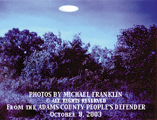
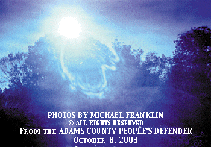
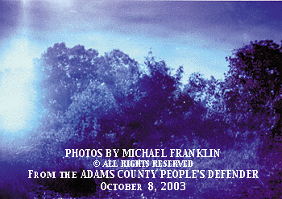

Re-typed article from The Adams County (Ohio) People's Defender
Wednesday, October 8, 2003
By Jynx Jenkins, Staff Writer for People's Defender ( https://www.peoplesdefender.com)
While speculation and theory have consumed the region following therecent crop circle discoveries, one Brown County resident stumbled uponwhat some may consider a challenge to rational explanation.
Michael Franklin and his wife Marsha, reside on their farm in Ellsberrywhere they enjoy observing nature and spending time on their land. Accordingto Mr. Franklin, he had recently purchased a �deer camera�, popularly advertisedin hunting stores and magazines, to observe deer on his property in preparationfor hunting season. To the uninitiated, cameras of this type use 35 mmfilm and can be programmed to react to both heat and movement within a30 foot radius, by snapping a photo with a flash. The camera can also beprogrammed to take photos at one, six, and eight, minute intervals, aswell as by the hour.
Aftermounting the camera at a hilltop grazing area to photograph through thenight on Tuesday, Sept. 23, and into the next morning, Mr. Franklin feltsure he would see deer, as well as the usual night creatures, on the film.However, after developing the roll, the Franklin�s observed images thatperplexed them.
�We looked at the prints quickly on the way to a picnic,� said Mrs.Franklin, an English teacher at Mason County in Kentucky, �and at firstwere disappointed because there were no deer in sight. But then we realizedthat the shapes in the sky were not normal.�
�We just decided that people needed to see these pictures,� Mr. Franklintold The Defender.

Upon chronological inspection of the prints in question, a sequenceseemed to emerge beginning with a white obelisk in the center of the frame.The photos, taken in the westwardly direction, then show what appears tobe a bright flash, accompanied by streams of light or white area following.The next frame shows the white or light area moving south west, or to theleft, in the frame.
While there has been no professional evaluation of the photos or thecamera itself, the area in question was investigated by Defender publisher,Caleb Grooms and reporter, Jynx Jenkins on Wednesday, Oct. 1. Along withMr. Franklin, Grooms and Jenkins traveled to the area and found that thepictures, taken in the morning hours of Sept. 24, sometime before 11 a.m.,did indeed face west, ruling out the possibility of the sun itself beingcaptured on film in the sky. Also, the distance of the tree line from theactual camera mounting site is beyond the 30 ft. detection radius, leavingthe execution of the shots unanswered, except for the possibility of extremeheat tripping the sensor.
Whilemany photos of such subject matter can be disproved or found to be cameraor processing faults, the Franklin�s feel the pictures should be seen andjudged by each viewer. No conjecture as to the nature or the origin ofthe subject matter within the photos shown has been made by the editorialstaff of The People�s Defender.
End of article
This reportby Jynx Jenkins has been re-typed from the October 8,2003 PEOPLE'S DEFENDER newspaper, West Union, OH (Adams County). The photographsare the property of Mr. Michael Franklin.
https://www.peoplesdefender.com
UFO RESEARCH: CINCINNATI
E-Mail Questions or Comments | RETURNTO MAIN PAGE
This page posted on October 16, 2003